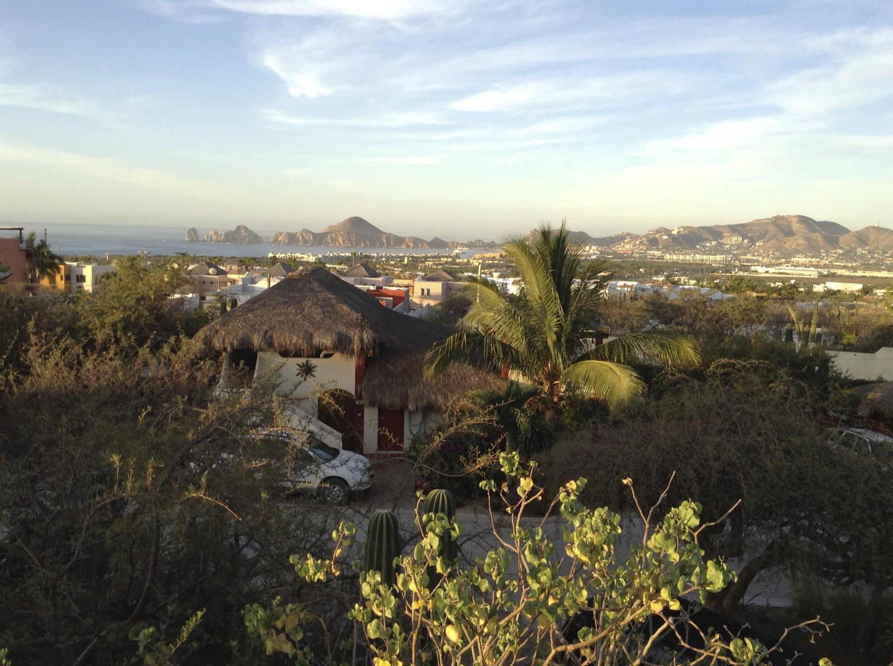
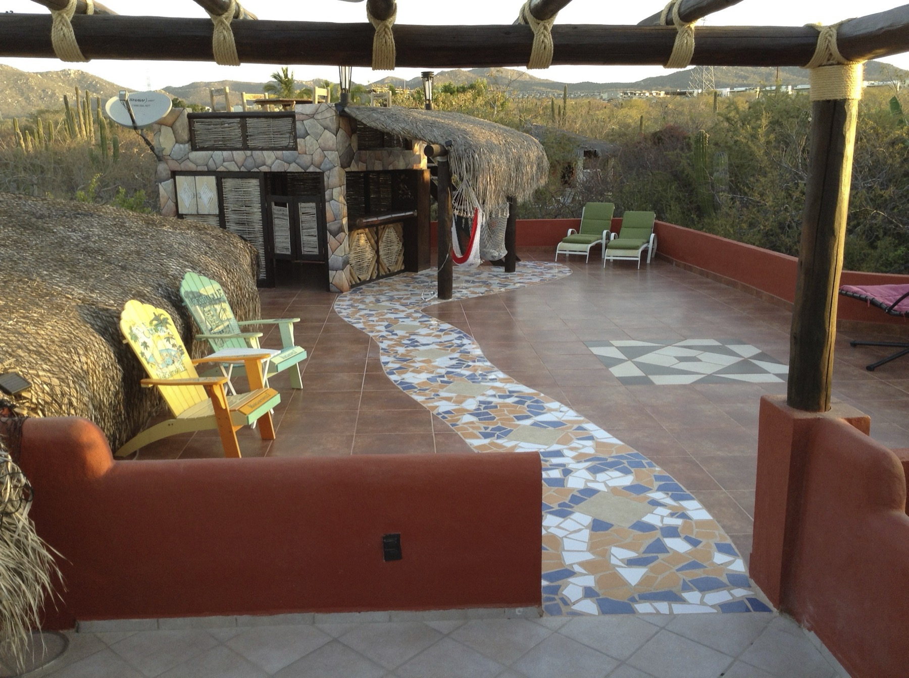
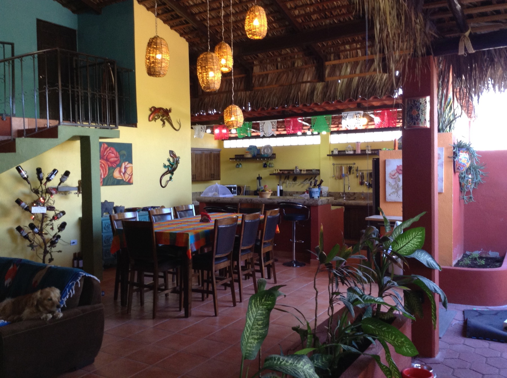
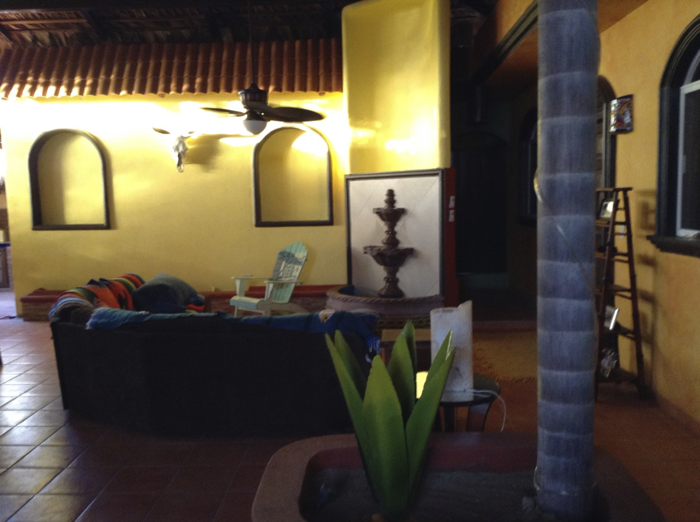
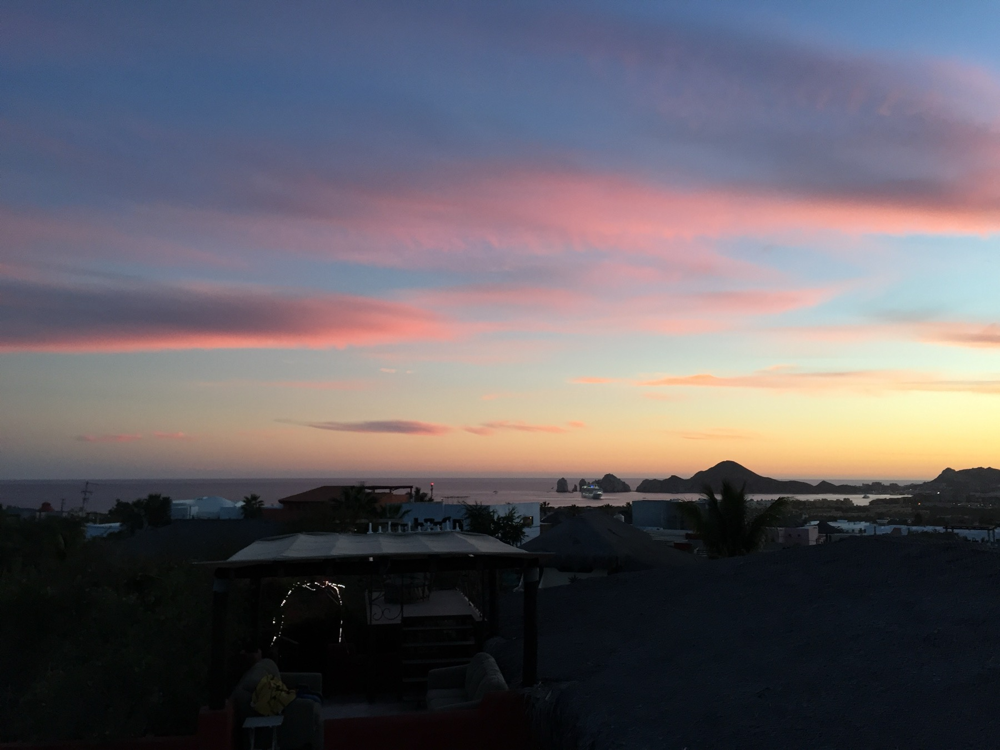
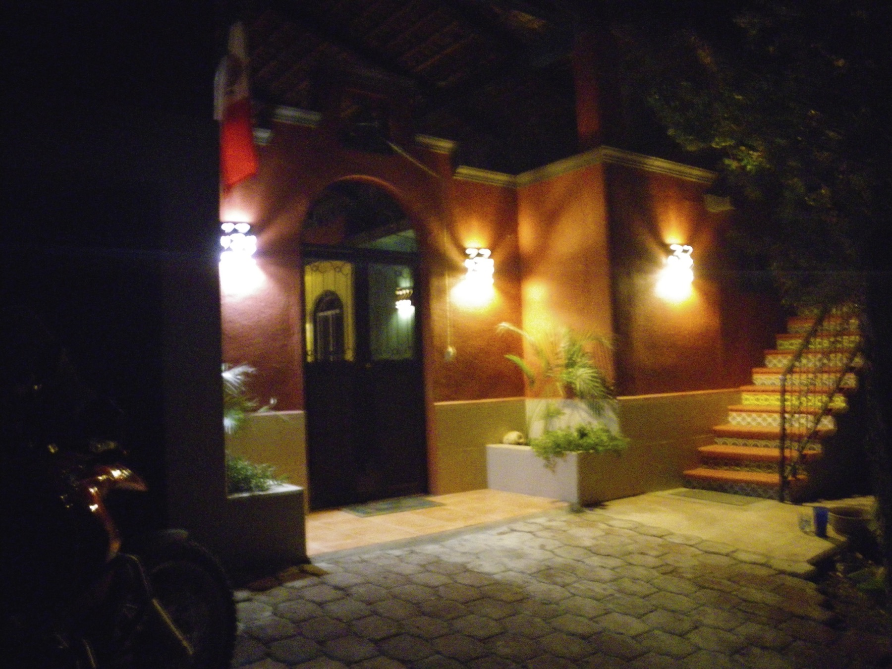

A spacious palapa home in El Tezal — a quiet Mexican neighbourhood in a gated community, minutes from Costco
The kitchen, dining and living room share one large open space under a traditional palm frond thatch featuring a stone fountain. A band of glass blocks set high above the cabinets lets daylight in all day.
Upstairs a mosaic tile pathway connects three private deck areas with a near 360° view from mountains to ocean. Sunsets run pink and gold over the arches at Land’s End.





Palapa #5 sits inside a gated community in Paloma Village, El Tezal — peaceful streets with palapa roofs and bougainvillea for neighbors instead of hotel towers, quiet enough to hear the wind.
Costco and Walmart are both a short drive, not an expedition. Land's End and the marina sit at the bottom of the hill; downtown Cabo San Lucas and the airport corridor are both easy reach from the front gate.